- Логин в AWS потребителски акаунт
Отидете в сайта на AWS и щракнете върху бутона Sign in, намиращ се в навигационната лента отгоре, след което
изберете Root
потребител или IAM потребител въз основа на описанието и въведете своя имейл.
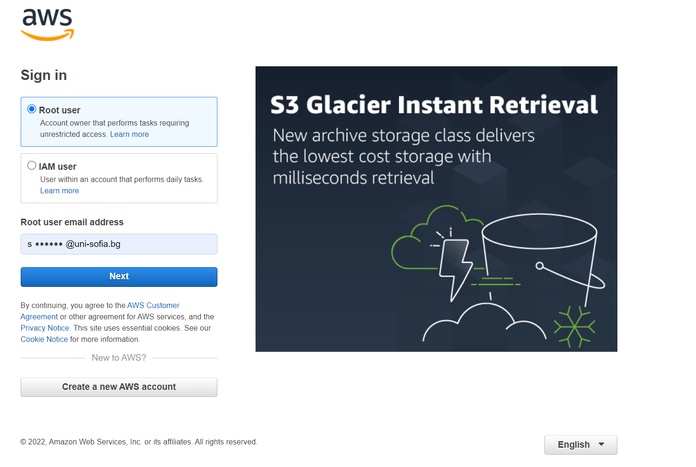
Щракнете върху “Next” и си въведете паролата, след което натиснете “Sign in”.
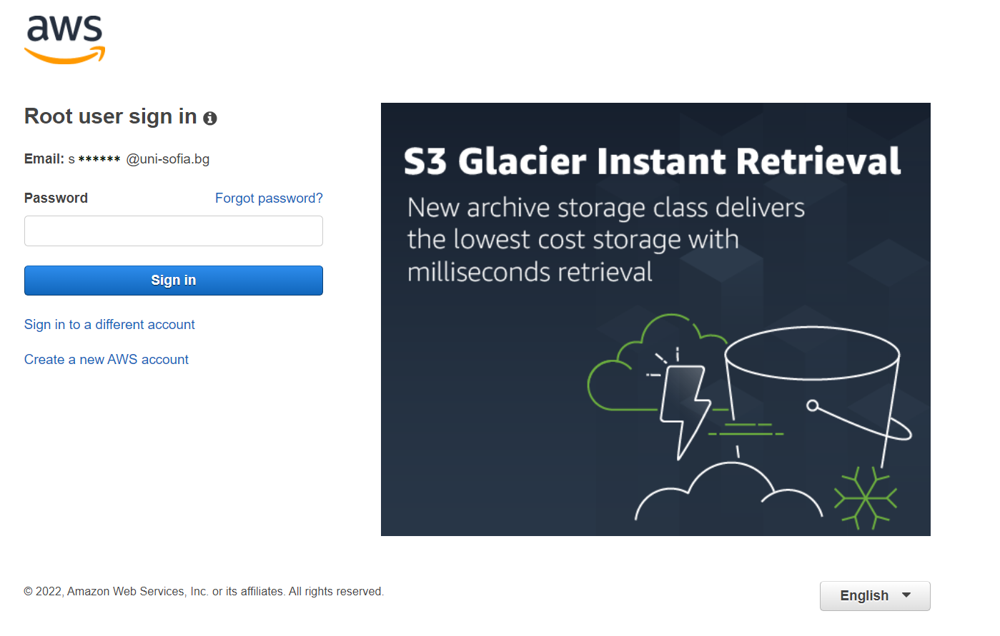
- Намиране на EC2 услугата
След влизане в акаунта ви ще видите началната страница с различни прозорци, един от които показва
най-известните услуги, предлагани от AWS. Може да откриете услугата EC2 от там, или да я потърсите горе-вляво
от бутона "Services", след което да я отворите.
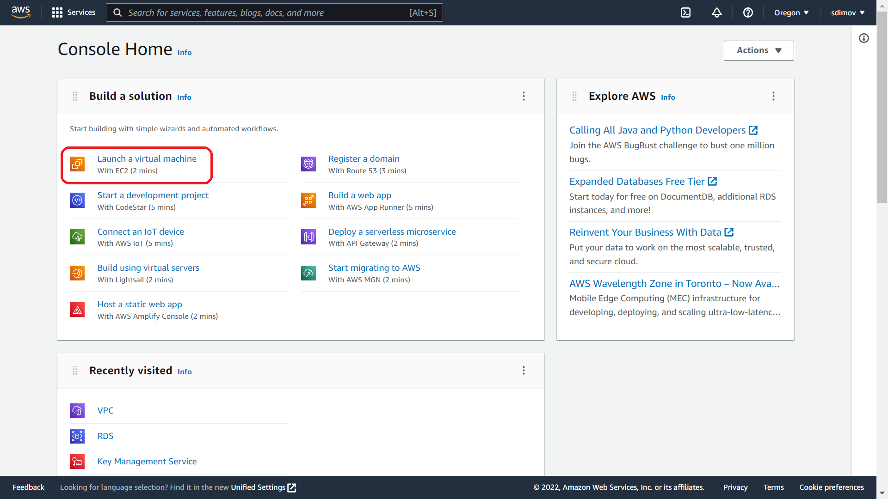
Ще ви се отвори екран с конфигуриране на настройките. В първото поле можете да именувате виртуалната си
машина, както и да добавите AWS тагове.
* С таговете можете да запазвате метаданни към своите AWS ресурси,
състоящи се от
дефинирани от потребителя ключ и стойност. Таговете могат да ви помогнат да управлявате, идентифицирате,
организирате,
търсите и филтрирате ресурси. Можете да създавате тагове, за да категоризирате ресурси по предназначение,
собственик,
среда или други критерии.
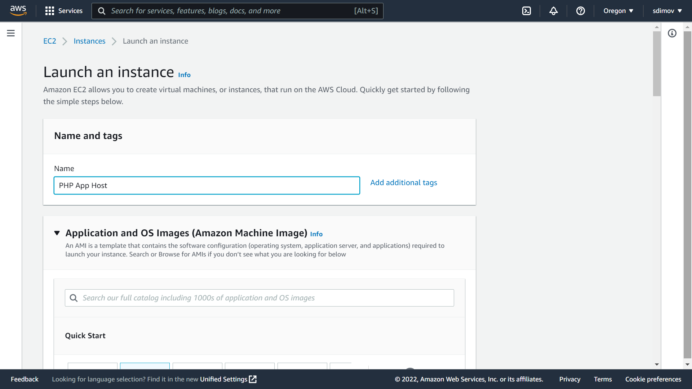
- Избиране на предпочитана ОС
Изберете предпочитаната операционна система на виртуалната машина, която ще ви служи за сървър. В този пример
ще изберем Ubuntu.
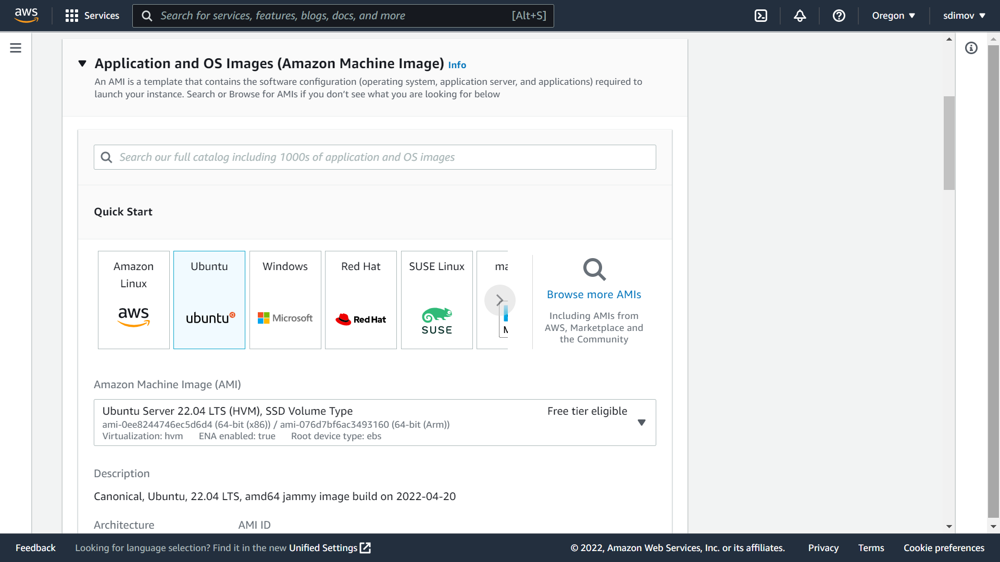
- Конфигуриране на EC2
В полето "Instance type" можете да изберете различни параметри за своята EC2 виртуална машина. Ние ще се
спрем на
Free Tier опция с 1GiB Memory (~1.07GB).
*За първите 12 месеца след датата на регистрация в AWS
потребителят има право на до 750 часа работно време на микро-инстанции всеки месец. Когато 12-месечният период
изтече или ако
потреблението надвишава ограниченията от 750ч/мес, заплащането става пропорционално на ползването на
съответната услуга.
В полето за Key Pair можете (и е препоръчително) да си създадете ключ за автентикация към вашата машина.
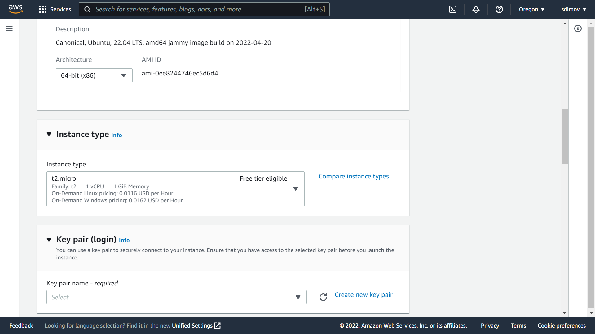
При
натискане на "Create new key pair" ще ви се появи прозорец с настройки на вашия ключ.
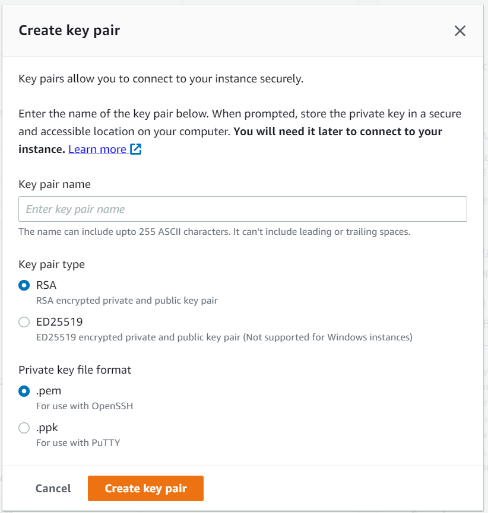
- Задаване на мрежови настройки
За нашите цели е достатъчно да изберем VPC и Security Group по подразбиране. Трябва да настроим правило
на security групата, в което да разрешим определен интернет трафик към машината. В нашия
случай сме разрешили всякакъв трафик, постъпващ само от собствения ни IP адрес.
Също можете и да изберете от вече дефинирани security групи или да добавяте много правила. Тези
настройки могат по-късно да бъдат
променени.
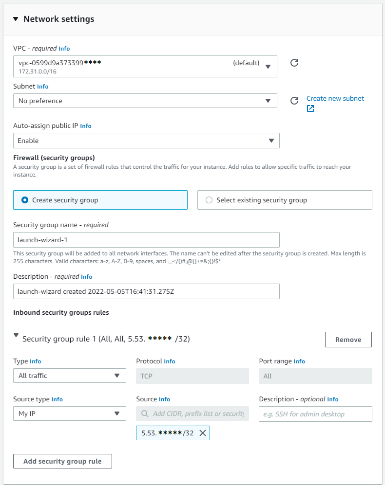
- Конфигуриране на хранилище
В тази секция можете да добавите определен размер памет на EC2 инстанцията. По подразбиране
размерът е 8 GB, но винаги можете да го промените според нуждите си. Ако натиснете бутона "Advanced" можете да
разширите възможностите за задаване на настройки на хранилището като избор на тип твърд диск (SSD), криптиране
на
данните, изтриване при терминация и др.
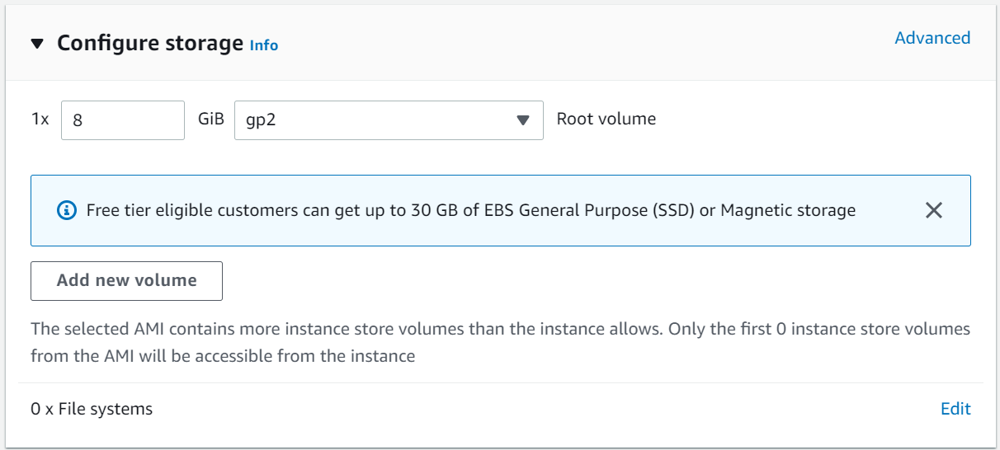
- Допълнителни настройки
Има секция за допълнителни настройки, които отварят доста възможности за работа с нашата виртуална EC2
инстанция, но те не са обект на тази статия и не са от съществена важност за нашите цели.
Все пак Amazon са предоставили допълнителна информация за всяка опция, достъпна чрез бутона "info" отдясно на
името и.
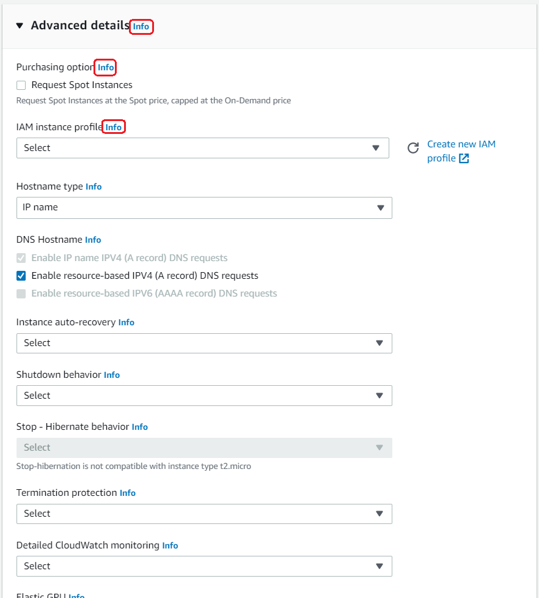
- Стартиране на EC2
Преди да стартирате инстанцията можете да прегледате информацията за нея в "Summary" секцията. Когато сте
готови с настройките натиснете "Launch instance" и почакайте известно време.
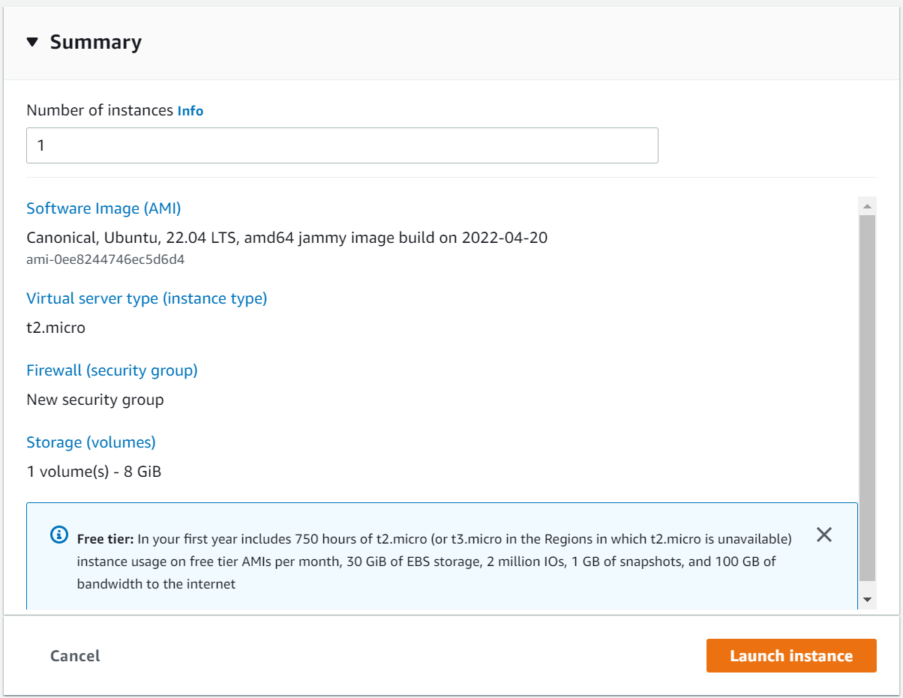
След стартиране на инстанцията ще видите екран със съобщение за успешното и създаване. Можете да натиснете
"View all instances", за да видите току що създадената виртуална машина.
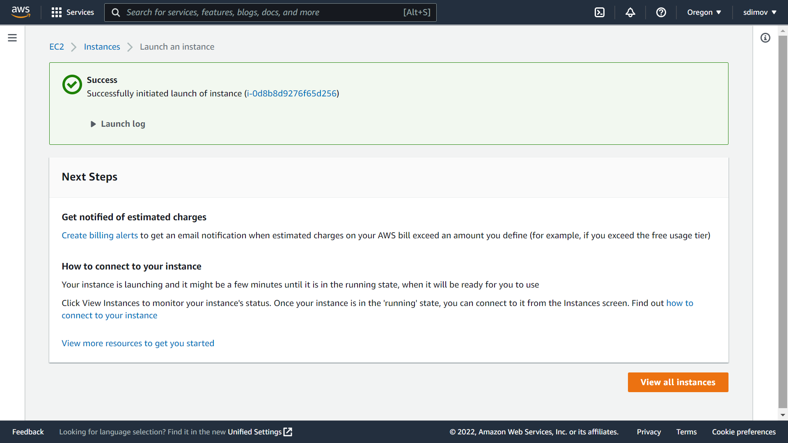
В тази страница можете да настройвате своята EC2 инстанция, да я спирате и пускате, както и да видите всички
данни и статистически анализи за нейната работа. Натиснете върху instance ID-то на конкретната инстанция, за
да я отворите.
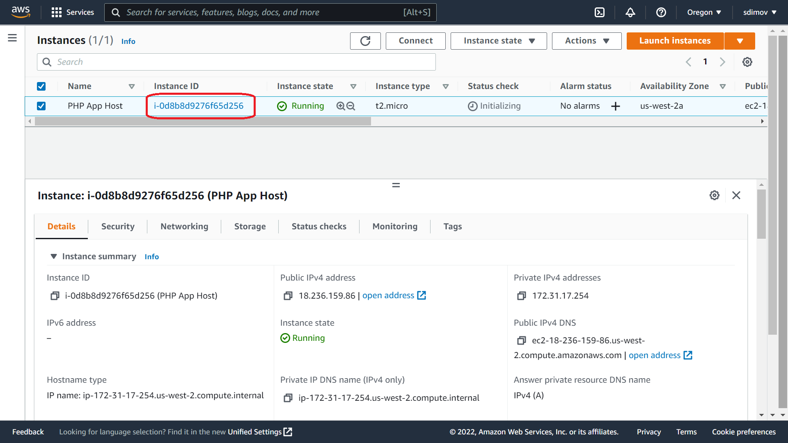
- Свързване към EC2
Натиснете "Connect", за да видите опциите за свързване.
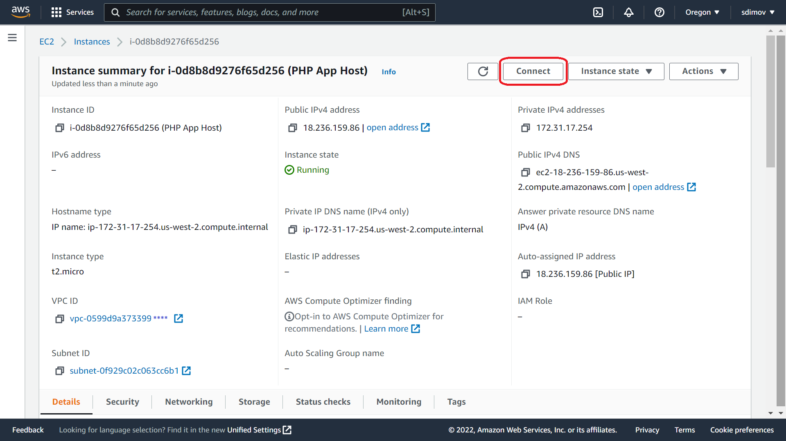
Изберете начин на свързване. В нашия случай ще ползваме Secure Shell. Копирайте примерната команда за
конекция с инстанцията.
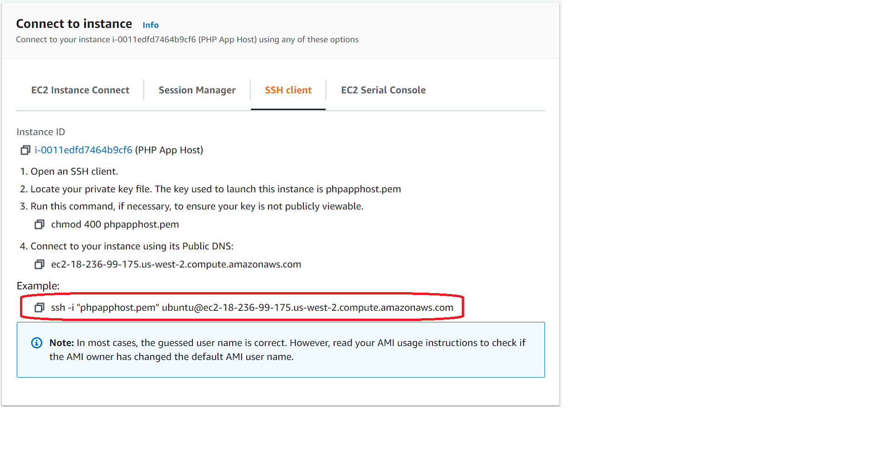
Ако сте на Windows OS можете да отворите Command Prompt, а на Linux - терминала. След това влезте в
директорията, където ви се е
запазил '.pem' файла с ключа. В нашия случай той се намира в папката 'Downloads' под името 'phpapphost.pem'.
Поставете по-рано копираната команда в терминала/командния ред и я изпълнете. В нашият случай:
'ssh -i
"phpapphost.pem" ubuntu@ec2-18-236-99-175.us-west-2.compute.amazonaws.com'
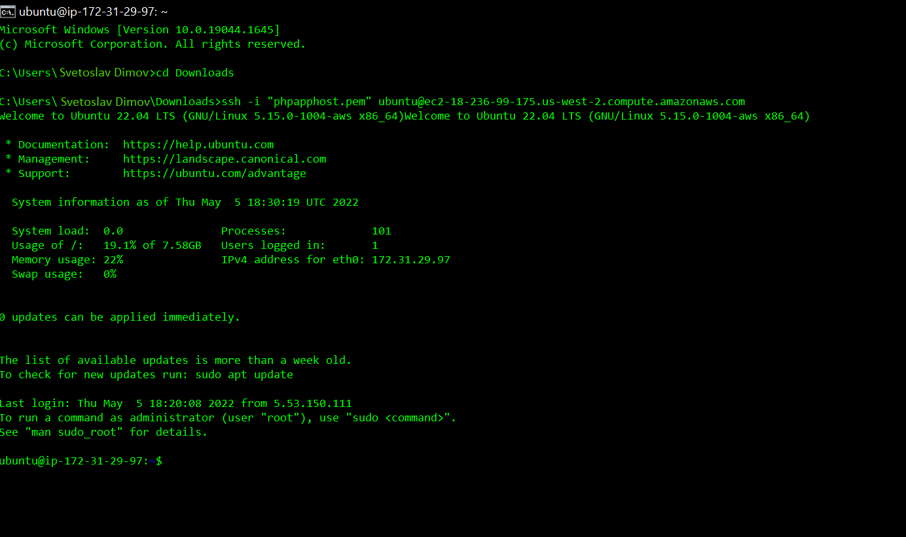
Вече работите в терминала на своята виртуална машина и всяка операция се извършва на нейната оперативна и
твърда памет. Поради тази причина на моменти терминалът може да ви се стори по-малко интерактивен или със
забавяне.
- Инсталиране на Apache сървър и PHP
За да може да стартирате PHP приложението трябва да инсталирате Apache сървър, който да обработва http(s)
заявките. За
целта следвайте следните команди:
- sudo apt update
- sudo apt install apache2
- sudo apt install php libapache2-mod-php php-mysql
Сега отворете своят уеб браузър и въведете публичния IP адрес на инстанцията, в случая той е 18.236.99.175.
Би
трябвало да видите “Apache2 Ubuntu” страницата по подразбиране. Това означава, че Apache сървърът е инсталиран
успешно и
работи. [2]
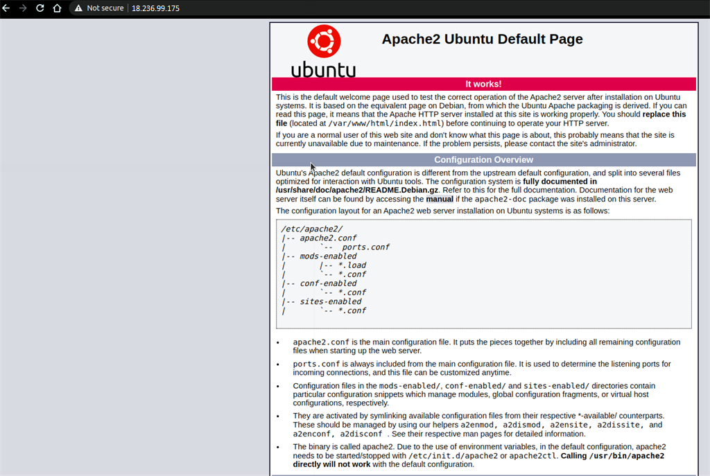
Сега, когато потребител отвори уеб приложението ви, Apache сървърът ще връща html файлове, това означава
файлове от тип
index.html. Затова ще трябва промяна в конфигурацията на Apache, така че първо да се отваря (ако е наличен)
index.php
файл, а след това index.html. Командите са: [2]
- sudo nano /etc/apache2/mods-enabled/dir.conf
Ще видите нещо подобно на това: [2]
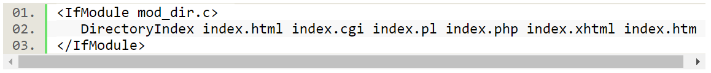
Преместете index.php на първо място преди index.html и натиснете CTRL+O и CTRL+X. [2]
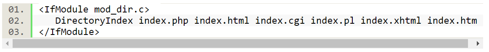
Сега рестартирайте Apache сървърът и проверете неговия статус със следните команди: [2]
- sudo systemctl restart apache2
- sudo systemctl status apache2
- Създаване на просто PHP приложение
Сега ще напишем PHP програма, която да изписва “Hello World” и ще я хостнем на нашия сървър. Можете да
направите това със следните команди:
- cd /var/www/html
- sudo nano index.php
Във файла да напишете следните примерни редове код и го запазете с командите CTRL+O и CTRL+X: [2]
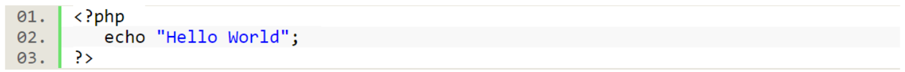
Сега ако отворите уеб браузъра и напишете публичния IP адрес на EC2 сървъра ще ви се отвори вашето PHP
приложение. [2]
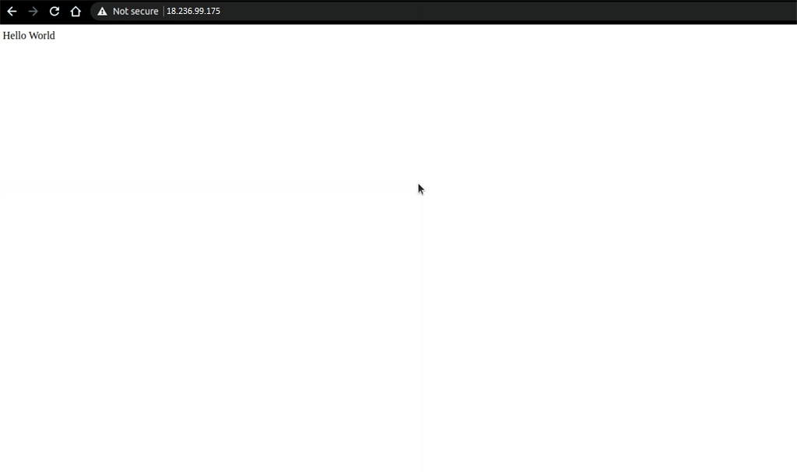
- Инсталиране на MySQL върху Apache сървър
MySQL е популярна, безплатна база данни с отворен код, която може да се използва за съхранение на бази данни
в мрежата.
За да инсталираме MySQL на уеб сървъра на apache в linux, първо искаме да се уверим, че нашият Linux сървър е
актуален.
За да направите това, изпълнете следните два реда код по-долу: [3]
- sudo apt-get update
- sudo apt-get upgrade
Тези команди извършват нужните ъпдейти и актуализации на вашата линукс система.
Сега сте готови да инсталирате MySQL на вашия Apache сървър. Можете да го направите с командата:
- sudo apt-get install mysql-server
Когато извършвате тази инсталация, shell ще ви подкани за парола за MySQL-сървъра. Трябва да въведете парола
и след това да я повторите за потвърждение. След като това бъде успешно инсталирано, можете да тествате дали
MySQL работи направо от терминала чрез
следната
команда: [3]
- mysql -u username -p
Заменете username с потребителя, с когото сте създали MySQL-сървъра.
След това ще бъдете подканени да въведете парола. След като направите това, вече имате пълен достъп до MySQL.
Можете да правите всички неща с MySQL както обикновено.
В кода по-долу е показано как се създава база данни, наречена users, а след това с командата “show databases”
се показват всички налични бази данни. [3]
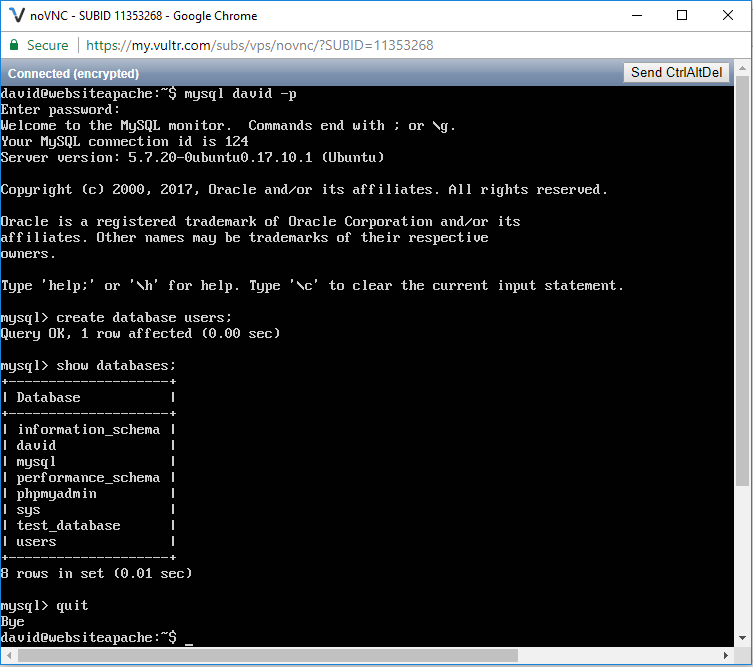
Накрая, излизате от софтуера MySQL с командата quit.
След това ще бъдете върнати към командния терминал на Linux.